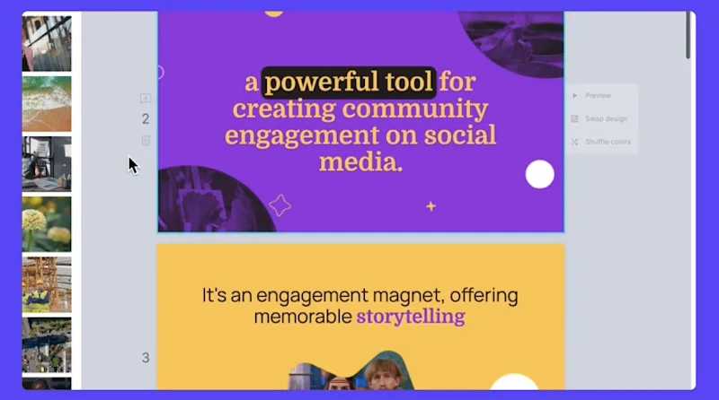
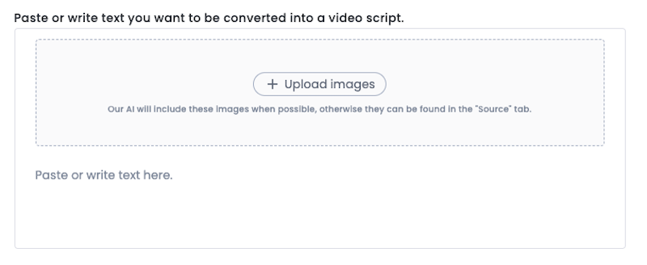

周五下班前的紧急视频：我是怎么用 lumen5 十分钟搞定朋友圈素材的
运营狗的真实救场经历——从接到需求到朋友圈发稿，只用了十分钟。这不是玄学，是一套被验证过的文字转视频工作流。
四点三十二分的紧急需求
周五下午四点三十二，我正盯着电脑右下角倒数还有多久下班，运营主管的微信弹进来了：「六点前要一条产品介绍视频发部门朋友圈，预热下周的发布会。」
我手里的动作停了。之前做过类似的东西，用剪映从找素材到加字幕到转场，快的话两小时。现在离六点不到一个半小时，中间还要接孩子放学。
脑子里闪过一个念头——之前隔壁组的同事好像提过一个 AI 视频工具，说能把文字直接转成视频。我打开浏览器搜了一下，找到了它的官网。

第一步没花一分钟：把文字喂进去
从官方下载拿到安装包注册登录后，我选了一个简洁的产品介绍模板，画幅直接选了竖版 9:16——朋友圈嘛，竖屏最舒服。然后就到了最关键的一步：把内容放进去。
我手边有一份写好的产品介绍 Word 文档，全选复制，切到 Paste text 标签直接粘贴进去。界面上还有一个 Upload images 入口，我顺手把上周拍的两张产品实拍图也传了上去。整个过程不到一分钟，连浏览器标签都没切。

AI 写脚本：给个时长就行
文字贴进去后，系统弹出了 AI 脚本编辑器。我直接在目标时长框里填了「60 秒」——朋友圈视频别太长，一分钟刚好。语气选了「活泼」，加了一句具体指令：「突出产品的三个核心卖点」，然后点了生成。
大概十五秒，脚本就出来了。标题、引言、三个卖点、结尾号召，每一段都标了预估时长，加起来刚好一分钟。AI 还给了另外两个角度的变体，我扫了一眼，选了最贴合产品调性的那版。
场景自动生成：大部分画面不用动
点了「生成视频」，系统开始按脚本逐段建场景。等进度条跑完，我进入编辑器一看——每个场景都自动选了模板布局，素材库的配图也自动匹配好了，连每个场景停留几秒都算好了。
这里有个细节我后来才搞明白：每个场景的时长不是随手定的，是按场景里的文字量算的——字多停得久，字少停得短。这样观众刚好能读完屏幕上的字，不会出现刚看清就切走的尴尬。
我快速扫了一遍，只有两个地方需要手动调：开头的真人出镜片段，AI 估的四秒不够，我加了两秒；结尾的空镜，我故意压短到三秒，让节奏更紧凑。其他十几个场景，画面、时长、配色全是 AI 自动处理的，基本不用改。
渲染出片：剩下五分钟够用了
调完点发布渲染，系统后台开始处理。我趁这个时间收拾了一下桌面，给幼儿园老师发了消息说六点半到。等我回来，MP4 已经生成好了。
从四点三十二接到需求到五点零二视频发出去，整三十分钟。如果不算中间收拾桌面和发消息的时间，纯操作大概十分钟。
后来才知道的进阶玩法
这条紧急视频发出去后效果还不错，部门群里有人问怎么做的。我去lumen5文档翻了一下，发现它的能力远不止「文字转视频」这么简单。
比如团队协作时的场景级评论——之前审片沟通成本很高，「第三条视频中间那个地方」这种描述谁对谁错全靠运气。现在评论直接挂在具体场景上，点开哪幕留哪幕的言，还能 @ 队友收邮件通知。改完的讨论标记解决，面板里只剩未处理项，审阅进度一目了然。
还有多平台分发的便捷性。做公众号横版视频和抖音竖版视频，以前要重新剪两条。现在用一键多画幅复制，一次生成横竖几个版本，配合字幕文件一起导出，省了不少重复劳动。
一点自己的心得
跑熟两三条后，我总结了几条让这套工作流更顺的小习惯：
一屏一句一意思。场景里塞三个信息点，节奏瞬间拖沓。屏幕文字只留关键句，长解释放旁白或者干脆删掉。
贴干净的正文。从聊天记录或语音转写稿里搬内容，先手动清一遍表情符号、@ 提及、时间戳这些杂质，再贴进去。AI 摘要的时候会尽量保留干净的部分，但脏东西多了还是会影响脚本质量。
自己的素材优先传。产品截图、活动照片、数据图表，贴文字时一并传上去，AI 分场时会优先用你自己的图，不够再从素材库补。自己的素材用得越多，视频越「像你们出的」。
这套工具我用了大半年，从第一次慌慌张张的紧急救场，到现在部门里好几个人都在用它做日常素材。它不是那种能让你五分钟出爆款的神奇工具，但它确实把「做视频」这件事的门槛砍到了一个运营、一个文案花十分钟就能搞定的程度。对我们这种不是专业剪辑、但又时不时需要出点视频素材的人来说，够用就是最好的评价。